第八章：图文创作
公众号文章编辑功能
1
新建公众号文章
选择公众号文章类型，填写作品信息
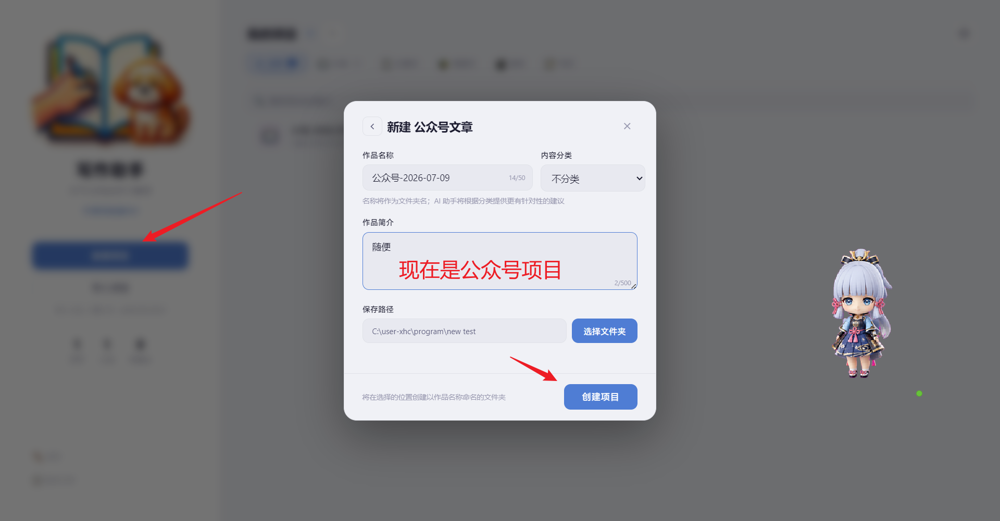
一个项目下可以有很多文章
2
文章编辑界面
支持文章模板、排版分类、HTML 编辑等功能
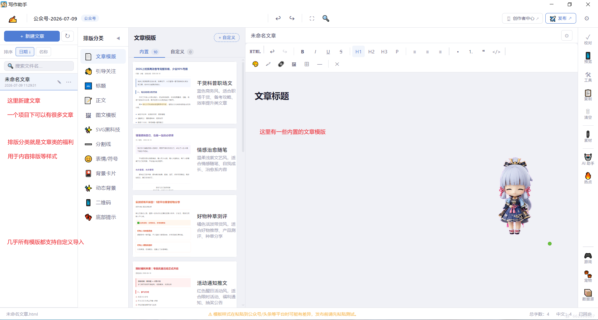
内置多种文章模板，支持自定义导入
从项目导航页到下载完成
首先打开浏览器，在地址栏输入网址
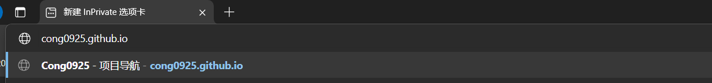
打开浏览器，访问 Cong0925 的项目导航页面，找到 Write Helper 项目

进入写作助手官网，点击"立即下载"按钮

跳转到夸克网盘，先保存到自己的网盘，然后下载到本地

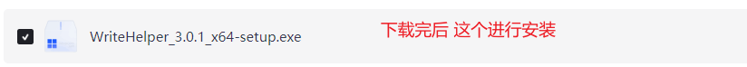
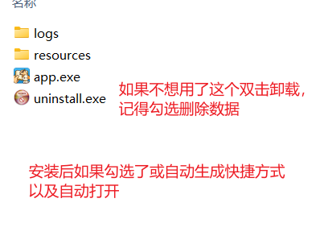
首次打开软件，完成基础配置
首次打开会显示用户须知，包括隐私政策、数据存储和 AI 功能说明

输入你的笔名，它将显示在首页并用于宠物事件记录

选择是否立即领养宠物，宠物会在写作时陪伴你

创建和管理你的写作项目
进入主界面，可以看到左侧的项目管理区域和右侧的功能模块

支持多种内容类型：小说、公众号文章、头条文章、小红书笔记、短视频脚本等

输入作品名称、简介，选择保存路径

了解编辑器的各项功能
编辑器包含多个功能区域，帮助你高效创作

点击工具栏的字体按钮，可以调整字体、字号、行高等

支持多种主题颜色：薄雾灰、护眼绿、羊皮纸、静谧蓝、浪漫粉、极简白
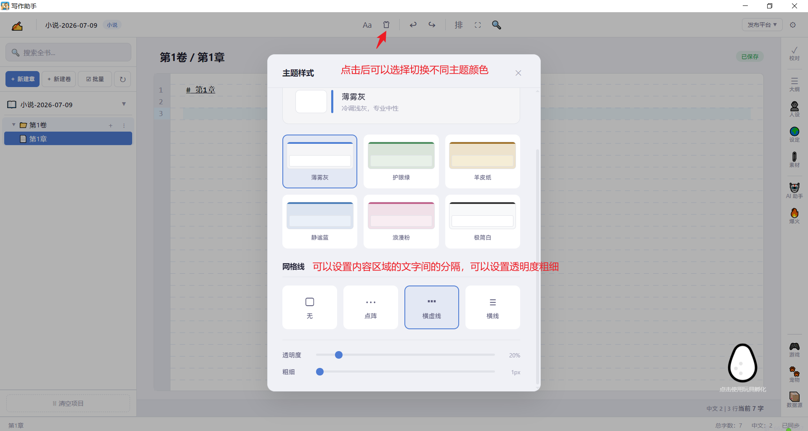
支持本章查找和全书查找，快捷键 Ctrl+F
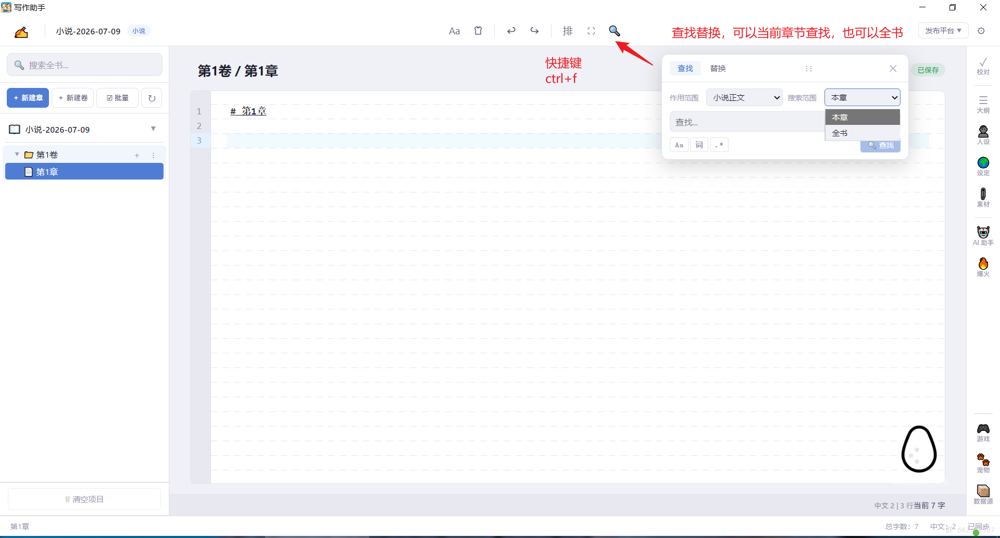
配置软件的各项参数
点击右上角齿轮图标打开设置面板，包含文件位置、快捷键、AI 模型等设置
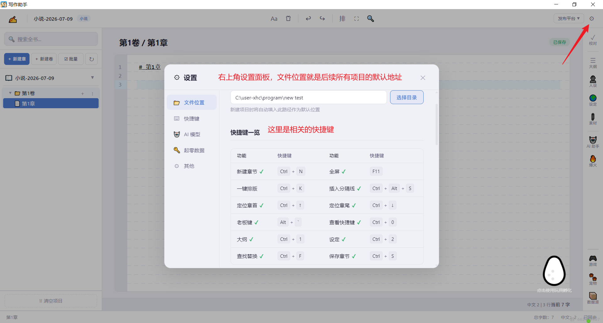
支持配置 DeepSeek 等大模型 API，用于 AI 协作功能
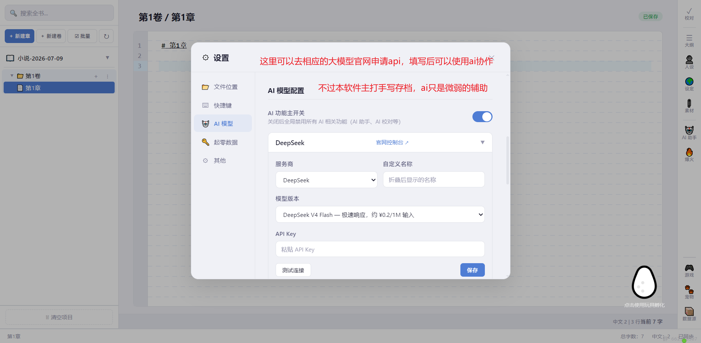
配置起零数据 API Token，设置自动保存等功能
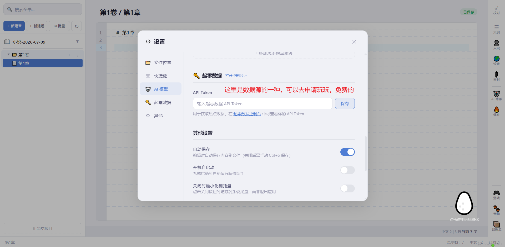
自动保存、开机自启动、关闭时最小化到托盘、显示宠物窗口等
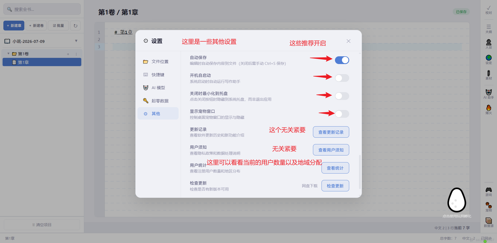
陪伴你创作的小伙伴
宠物有三维属性（饱食度、清洁度、心情），需要定期照顾
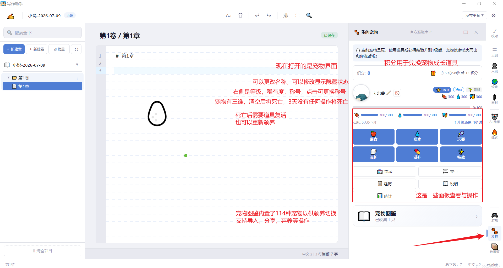
系统内置 114 种宠物，包括游戏角色、动漫角色、影视角色等
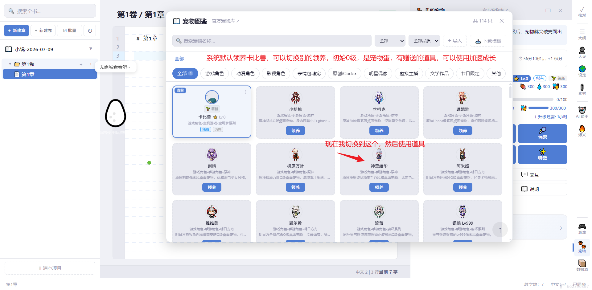
使用道具可以获得经验，加速宠物成长
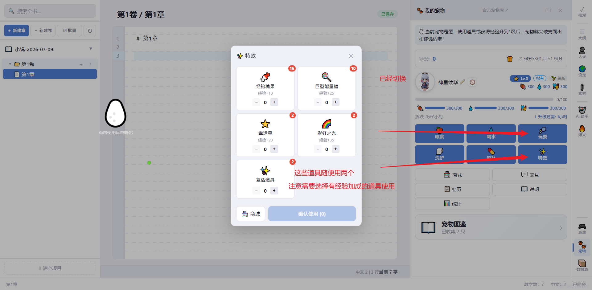
使用道具后宠物会孵化，可以点击宠物蛋使用 F5 刷新状态
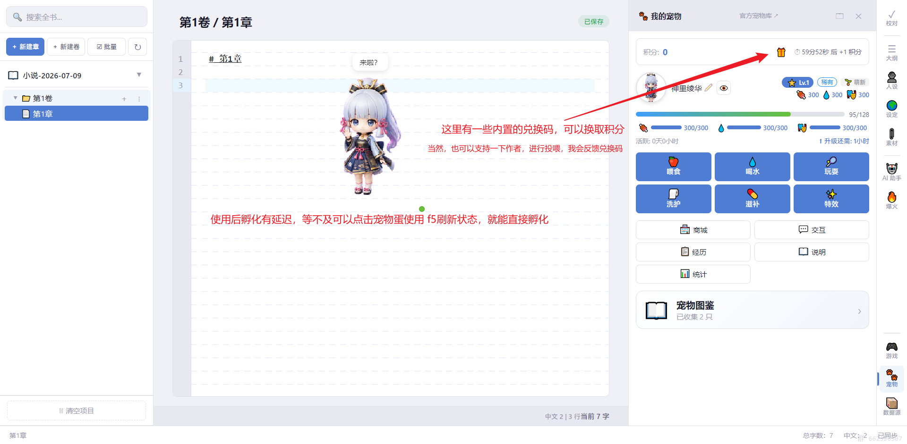
输入兑换码可以获得积分，用于兑换宠物道具
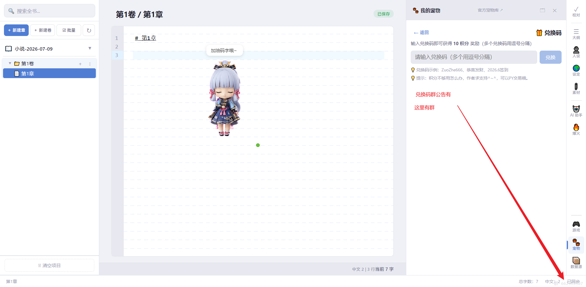
对宠物右键可以唤出快捷菜单，进行喂食、喝水等操作
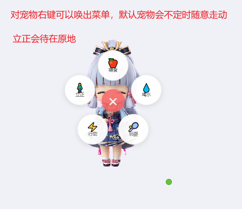
写作间隙放松心情
支持五子棋、恐龙跳跃、吃小球、飞机射击、方块躲避、2048、消消乐、打砖块等
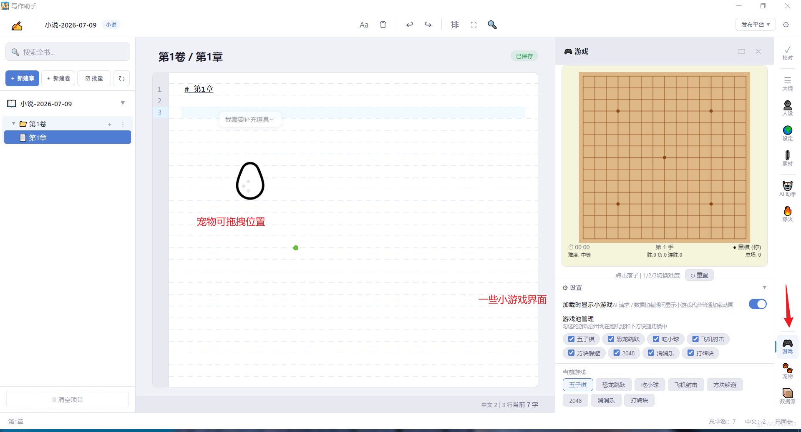
公众号文章编辑功能
选择公众号文章类型，填写作品信息

支持文章模板、排版分类、HTML 编辑等功能
